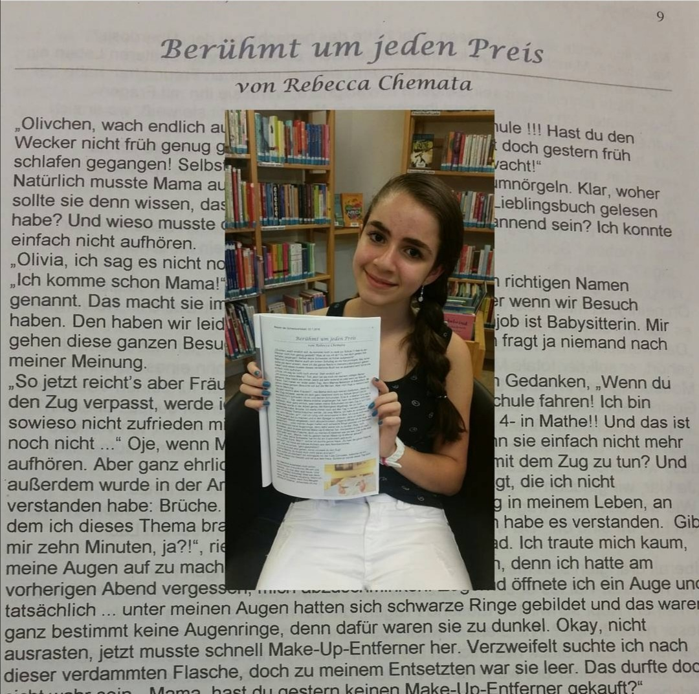

Ich bin noch neu was das Programmieren angeht. Zwar habe ich nun letztes Semester Erfahrungen mit <JavaScript> gesammelt, aber im Gegensatz zu anderen Studenten, hatte ich vorher nichts mit programmieren zu tun. Dies ist also die erste Webseite, die ich erstelle :)
Mein Name ist Rebecca Chemata und bin achtzehn Jahre alt, also eine der jüngeren Studentinnen. Ich spreche fünf Sprachen <Libanesisch, Deutsch, Englisch, Spanisch, Französisch > und habe drei Staatsangehörigkeiten <Libanesische, Deutsche und Griechische >. Nein, ich habe nicht nur libanesische " Wurzeln ", auch wenn ich das oft gefragt werde. Ich wurde im Libanon geboren und bin dann mit vier Jahren nach Deutschland ausgewandert. Also bin ich durch und durch Libanesin :)
Da ich noch sehr jung war, kann ich mich an das meiste der Reise nicht mehr erinnern. Ich weiß nur, dass ich im Kindergarten erst Deutsch gelernt habe. Mit den Jahren habe ich mein großes Interesse an der deutschen Sprache und vor allem an Büchern und Geschichten entdeckt. Das führte dazu, dass man mich immer nur noch mit einem Buch in der Hand irgendwo lesen sah. Neben der Schule hatten wir eine große Bücherei, von der ich mir haufenweise Bücher ausgeliehen habe und sie dann am nächsten Tag wieder zurückgebracht habe, weil ich sie bereits durchgelesen hatte :) Hier finden Sie den Link zu einem Wikipedia Artikel von einem meiner Lieblingsbücher Tintenherz. Wobei ich dazu ehrlich sagen muss, dass ich das Buch tausendmal besser finde als den Film. Jetzt bin ich aber vom Thema abgekommen. Das ist eine meiner Schwächen, wenn ich über etwas rede, was mich interessiert.
Im Gymnasium habe ich dann die Schreibwerkstatt-AG für mich entdeckt. Bei der, hat ein bekannter Autor uns beigebracht selbst Geschichten zu schreiben. Am Ende des Jahres gab es eine Versammlung in der Bücherei, bei der alle ihre Geschichten vorlesen durften. Relativ am Ende meiner Schulzeit musste ich dann bedauerlicherweise die AG verlassen, da ich wegen den Abiturvorbereitungen keine Zeit mehr hatte, selbst Geschichten zu schreiben.
Was habe ich sonst noch für Interessen? Ich spiele schon seit über elf Jahren Keyboard. Nein, kein Klavier, obwohl viele Menschen nie den Unterschied finden können und mich fragen, wieso ich kein Klavier spielen würde, was ich netterweise mit einem " Das ist nicht dasselbe! " beantworte. Allerdings musste ich auch damit, beziehungsweise mit Privatunterricht aufhören, da ich auch dafür im letzten Schuljahr keine Zeit gefunden hatte. Es brach mir echt das Herz, aber Bildung geht ja bekanntlich vor. Trotzdem spiele ich noch Keyboard und bringe mir den Rest, den ich nicht lernen konnte, selbst bei.
Mal abgesehen von meinem Interesse an Büchern und Musik, habe ich auch oft Freude an Naturwissenschaften und Mathematik. Ja, deswegen musste ich auch sehr oft blöde Blicke einkassieren. Mädchen und Naturwissenschaften? Und dabei noch Mathematik als Lieblingsfach? Das geht doch nicht! Mein Interesse für Mathe habe ich auch im Studium nicht verloren. Ich bin sogar in diesem Semester als Tutorin tätig und darf den Erstis Mathe und Physik erklären. Das wird lustig :)
Ich habe erst letztes Jahr mein Abitur gemacht und habe danach beschlossen sofort mit Studieren anzufangen. Da ich relativ viele Interessen habe, war es erstmal nicht so " leicht " ein passendes Studium für mich zu finden. Ich liebe es zu texten, zu zeichnen und zu designen. Aber nicht nur das: Im OMB Studium habe ich nun zusätzlich mein Interesse fürs Programmieren entdeckt. Da meine Eltern eine Ferienwohnung in Schönwald haben, wollte ich mir ein Studium dort in der Nähe suchen. Die Alternative wäre ein Embedded Systems of Engineering Studium in Freiburg gewesen. Da ich Freiburg aber mittlerweile in- und auswendig kenne, weil ich dort zahlreiche Girlsdays verbracht habe, sei es beim Fraunhofer Institut IPM oder beim Max-Plank-Institut, wollte ich etwas Neues ausprobieren.
Glücklicherweise liegt Furtwangen ja in der Nähe von Schönwald und so bin ich auf die HFU gestoßen. Nun musste ich mich noch zwischen MIB, OMB und MKB entscheiden. Beworben habe ich mich für alle drei Studiengänge. Da OMB ein bisschen von allem macht, also Programmieren und Konzeption, habe ich mich schließlich für OMB entschieden. Bis jetzt gefällt mir das Studium sehr gut, auch wenn ich das Online-Semester schade finde, da es deshalb schwerer ist neue Leute kennenzulernen. Aber, es ist so wie es ist. Ich hoffe nur, dass die Corona-Pandemie endlich irgendwann vorbei ist, damit ich das Studieren so erleben kann, wie es eigentlich ist: In einem großen Saal zu sitzen, den Professor persönlich bei den Vorlesungen zuhören und in den Pausen mit den Mitstudenten in der Cafeteria sitzen.
Ja, Corona macht uns allen das Leben schwer. Sogar mein Abiball konnte nicht richtig stattfinden, da er gegen die Hygienevorschriften verstoßen hätte. Jedenfalls freue ich mich auf die weiteren Semester an der Hochschule Furtwangen . Ich bin gespannt, was noch alles auf mich zukommt.
Sie sind nun am Ende meiner Webseite angekommen. Vielen Dank fürs Lesen und ich hoffe, Sie konnten mich dadurch etwas besser kennenlernen. Falls Sie wieder auf den Vorstellungsblock meiner Seite gelangen wollen, dann bitte hier klicken .